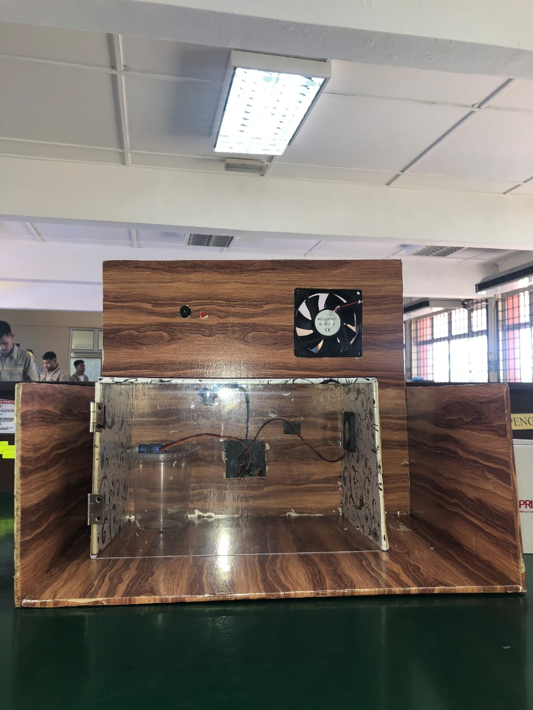

Embedded IoT & Safety
LPG Gas Detector with Auto Shut-Off & Telegram Alert
Real-time residential gas leak detection system that automatically shuts off the gas supply and sends instant Telegram alerts to homeowners.
Arduino
Proteus
Telegram Bot